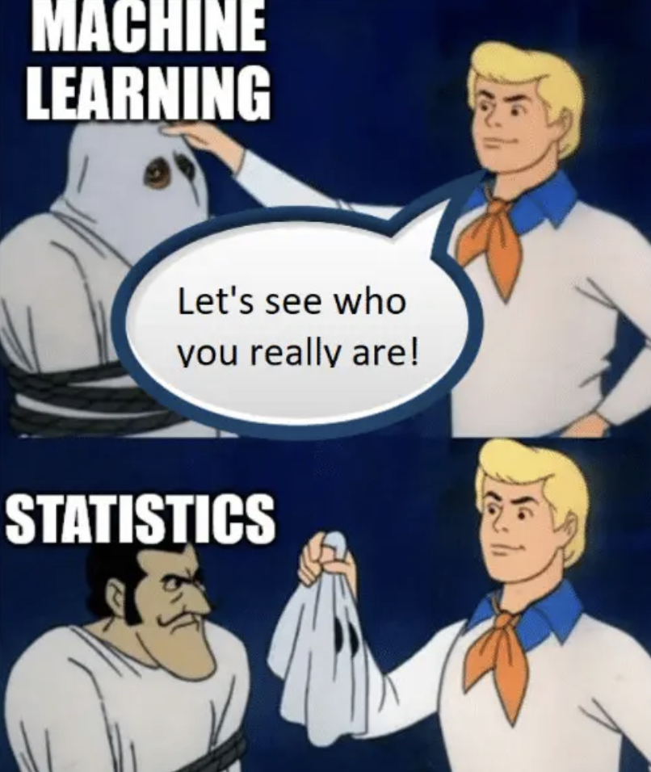

The video below is a general tutorial on getting started in VS Code. He covers things that we haven't really covered yet, but he's very straightforward.
Machine Learning Meme 7/20/23
This meme explains how statistics are a core component of machine learning and organizing data. It uses a Scooby Doo scene of Fred removing the monster's mask to show that machine learning and statistics are similar.
Taylor Germany 7/18/23
Genevieve Grotjan Fenstein was a cryptanalyst who made history with her discoveries. She was hired to work for the Army Signal Intelligence Service (SIS) in 1939. In 1940, she would make a groundbreaking discovery that would allow the SIS to build an analog machine that decoded the Japanese diplomatic system “Purple”. By understanding Purple, they were given all types of important information about Japan’s plans for war and scheduled attack locations.
In October of 1943, Ms. Grotjan was assigned to the Soviet problem and worked on the project later known as "Venona." She came up with a process for recognizing the re-use of key, which played a big role in the decryption of Russian KGB messages.
Also in 1943, Ms. Grotjan married a chemist by the name of Hyman Feinstein. After serving as a cryptanalyst and a research analyst for over seven years, She resigned from the government in 1947 and became a mathematics professor at George Mason University. Genevieve Grotjan Feinstein died in 2006 at the age of 93. Before his death in 1995, Hyman Feinstein received an award in cryptology from the Department of Mathematical Sciences at George Mason in honor of his wife.